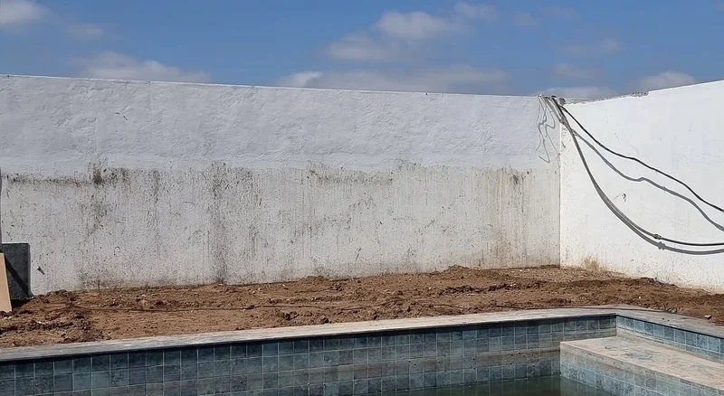
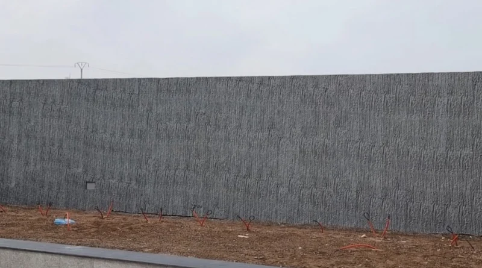
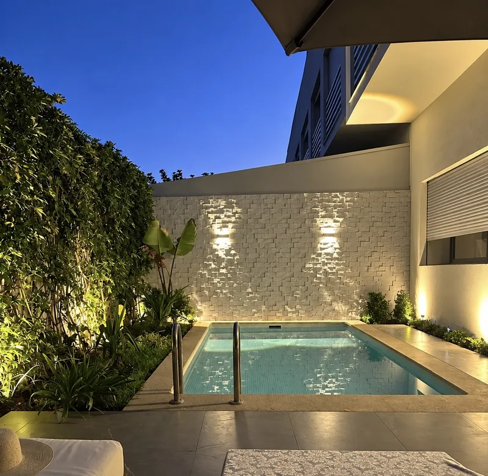
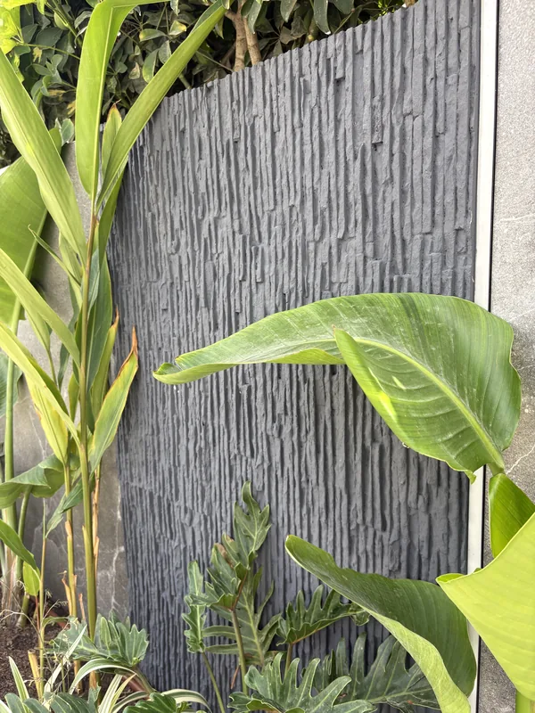
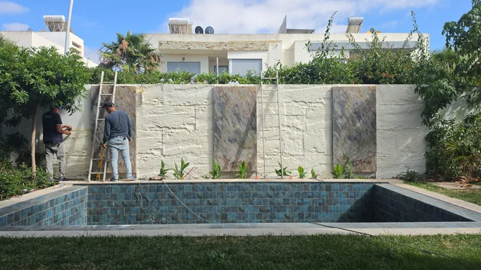

Habiller un mur de jardin, de clôture ou de piscine
L'habillage de mur de jardin transforme un mur de clôture en parpaing, ou un enduit fatigué, en mur d'aspect pierre. Les panneaux Le Celestone™ se collent et se vissent sur le mur, puis se peignent dans votre teinte. Ils n'absorbent pas l'eau et résistent au soleil. Pose par nos équipes, de Casablanca à Bouskoura et Dar Bouazza.
Mur de jardin, Californie · Mattoni, anthracite
Cacher un mur en parpaing, ou un mur de jardin fatigué
Un mur de clôture en parpaing, un enduit qui s'écaille, une peinture à refaire chaque été : c'est souvent le mur que l'on voit le plus depuis la maison, et celui que l'on soigne le moins. Plutôt que de le repeindre encore, on l'habille.
Mur de clôture
Le mur qui entoure le jardin, sur toute sa longueur ou seulement sur la partie vue depuis la terrasse.
Mur de piscine
Le mur du fond, celui qui se reflète dans l'eau. Au bord du bassin, les éclaboussures ne pénètrent pas la matière.
Muret et terrasse
Un muret, un soubassement, un mur de terrasse : le même relief, à plus petite échelle.
Avec la façade
Clôture et façade dans le même relief et la même teinte : depuis la rue, la maison paraît d'un seul bloc. Voir le revêtement de façade.
Le même mur de jardin, avant et après
Au bord d'une piscine, un mur en enduit taché et fatigué. Après la pose, le même mur est habillé en Mattoni et peint en gris anthracite.

Avant
AprèsMur de jardin et piscine · Mattoni · anthracite
Murs de jardin et de piscine habillés par nos équipes
Chaque photo vient de l'un de nos chantiers, prise une fois le mur peint. Les mêmes reliefs vous attendent au showroom, panneau en main.




Un mur de jardin qui tient dehors, et qui se repeint
Il ne boit pas l'eau
Pluie d'hiver, arrosage au pied du mur, éclaboussures de la piscine : la matière est hydrofuge, elle n'absorbe pas l'eau.
Il tient au soleil
La matière contient des additifs anti-UV. Un mur exposé plein sud garde son relief.
Votre teinte
Livré en primaire, prêt à peindre. Dehors, on le peint en Jotun Jotashield, dans la teinte de votre choix : blanc, beige, sable, anthracite, noir…
Entretien et peinture
Un rinçage au tuyau d'arrosage, de temps à autre. Pour changer d'ambiance, une nouvelle couche de peinture.
Quel modèle pour un mur de jardin ?
Tous nos modèles se posent à l'extérieur. Ceux-ci habillent déjà des murs de jardin et de piscine, à Casablanca et autour. Le détail de chaque relief est sur la page effet pierre.
Big Rock
La pierre brute, en grands panneaux. Sur un long mur de clôture, le relief se lit de loin. Voir Big Rock
Mattoni
L'ardoise en fines lamelles. En anthracite, il fait ressortir le vert du jardin ; en sable, il reste lumineux. Voir Mattoni
Cubo
La mosaïque de pierre éclatée. Éclairée le soir, elle se couvre d'ombres et de reflets. Voir Cubo
Bois Cubo
Le damier effet bois, pour un mur plus chaleureux autour d'une piscine. Voir Bois Cubo
Comment se passe la pose d'un mur de jardin
Photo et simulation
Vous envoyez une photo du mur et sa longueur approximative sur WhatsApp. Sous 24 h, nous vous renvoyons la photo, mur habillé, dans le modèle et la teinte que nous proposons.
Visite et métré
Sur place, nous mesurons le mur et repérons l'accès : plantations, bord de piscine, passage du matériel. Le devis est établi à partir de ces mesures.
Pose
Les panneaux sont encollés puis vissés au mur, sans ossature ni maçonnerie. Le mastic acrylique referme les joints et couvre les vis. Le détail de la pose.
Peinture
Le mur est peint en Jotun Jotashield, dans la teinte choisie sur la simulation.

Prix d'un habillage de mur de jardin : de quoi il dépend
Pas de prix au m² affiché ici : un mur de clôture droit et dégagé ne se chiffre pas comme un mur de piscine entouré de plantations. Voici ce qui fait varier le devis. Plus de détails sur notre page prix d'un revêtement mural.
- La longueur et la hauteur habillées : tout le mur, ou seulement la partie vue depuis la maison.
- Le modèle : Big Rock, Mattoni, Cubo, Bois Cubo…
- L'accès : jardin planté, bord de piscine, passage du matériel.
- Les découpes autour des angles, des retours et des portails.
- La peinture : la teinte Jotashield retenue.
Votre mur, chiffré sous 24 h
Trois éléments suffisent, sur WhatsApp :
- une photo du mur ;
- sa longueur et sa hauteur approximatives ;
- votre quartier, et s'il y a une piscine.
En retour : une simulation photo et une première estimation. Le devis ferme vient après la visite de métré.
Envoyer mon mur sur WhatsAppHabillage de mur de jardin : vos questions
Peut-on habiller un mur de jardin en parpaing ?
Oui, dès lors que le mur est plan. En règle générale, nos habillages se posent sur toute surface plane : nos équipes en ont déjà posé sur du bois, du marbre, du BA13, et sur de l'enduit selon l'épaisseur du modèle choisi. Les panneaux se collent et se vissent, sans ossature ni maçonnerie : le parpaing disparaît derrière un relief de pierre, d'ardoise ou de bois. Nous regardons le mur avec vous pendant la visite de métré.
Le Celestone™ tient-il au soleil, à la pluie et au bord d'une piscine ?
Oui. La matière est hydrofuge et contient des additifs anti-UV, et sa finition, le Jotun Jotashield, est une acrylique prévue pour l'extérieur. Au bord d'une piscine, les éclaboussures ne pénètrent pas la matière.
Mon mur de clôture a des traces d'humidité. L'habillage les règle-t-il ?
Non. L'habillage couvre le mur, il ne le soigne pas : la matière résiste à l'humidité, mais la cause d'une infiltration reste à régler. Montrez-nous ces traces pendant la visite de métré, nous en parlerons avec vous.
Combien coûte l'habillage d'un mur de clôture de 2 mètres de haut ?
À hauteur égale, tout se joue sur la longueur, le modèle et l'accès. Le plus simple : une photo du mur, sa longueur et votre quartier sur WhatsApp. La simulation et l'estimation arrivent sous 24 h.
Peut-on habiller seulement une partie du mur ?
Oui : la partie vue depuis la terrasse, le mur du fond de la piscine, un muret. La simulation photo vous montre le résultat avant de décider.
Quel modèle choisir pour un mur de jardin ?
Big Rock pour la pierre brute, Mattoni pour l'ardoise en lamelles, Cubo pour la pierre éclatée, Bois Cubo pour l'effet bois. Tous se posent dehors. Au showroom, vous les comparez panneau en main.
Comment entretenir un mur de jardin habillé ?
Rincez-le au tuyau d'arrosage quand la poussière s'y dépose. Pour changer de couleur, on le repeint en Jotashield, par-dessus l'ancienne teinte.
Dans quels quartiers posez-vous ?
Nos équipes posent à Anfa, Aïn Diab, Californie, CIL, Oasis, CFC, Palmiers, Tamaris, Bouskoura et Dar Bouazza. Pour un mur ailleurs au Maroc, écrivez-nous : la livraison couvre tout le pays.
Voyez votre mur de jardin habillé
avant de décider
Commencez par une photo de votre mur. La suite se passe chez vous, pour le métré, ou au showroom, pour prendre les panneaux en main et faire le test de l'eau.
Showroom : 11 Rue Hounaine, Bd d'Anfa, Casablanca · Lun–Ven 10h30–13h / 15h30–19h · Sam 11h–13h